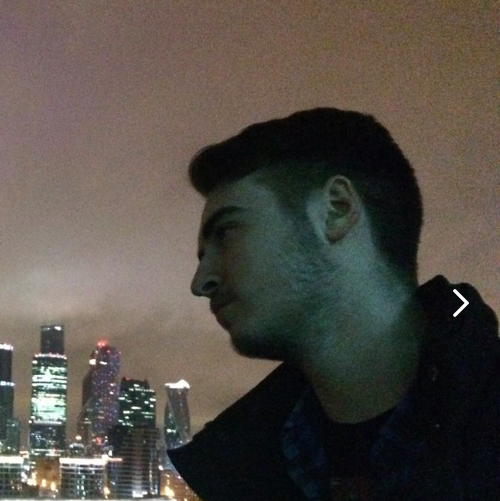
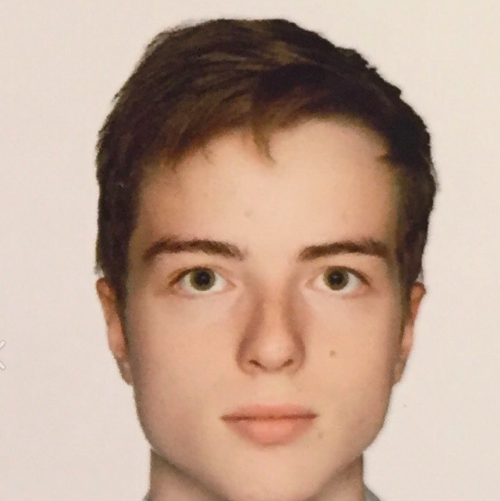

Сенсоры в беспилотных дронах

Радары
Радары позволяют почти мгновенно (по сравнению с камерами), а главное — с хорошей точностью получать информацию о расстояниях до объектов и их скоростях. Подходят для работы с удалёнными объектами, не сильно зависят от погодных условий, работают в темноте.
Лидары
Излучатели лидара формируют вертикальную полосу из лазерных лучей, как правило, их от 16 до 128. Для создания картинки с охватом 360° площадка с лазерами совершает несколько оборотов в секунду вокруг своей вертикальной оси.
Лидары выдают хорошо детализированную картинку происходящего вокруг, определяют расстояния до объектов и их скорость. Обладают хорошей дальностью и высокой скоростью работы. Отлично функционируют при плохой погоде и в ночное время суток.
Дроны заменят курьеров?
Мы хотим предложить использовать дронов не для того, чтобы снимать красивые панорамы, а чтобы дрон мог самостоятельно, без помощи человека доставлял груз. Эта вохможность очень сильно облегчит работу курьерам или совсем заменит их.
Это дрон для дальних полётов с фиксированным крылом, совмещающий высокоточные возможности лидарного сканирования с RGB-камерой высокого разрешения, что несколько повышает точность полета. Дрон может летать над большими площадями в неблагоприятных погодных условиях в автономном режиме, вне прямой видимости, делая минимальное количество полётов для охвата района.
До сих пор лидары воздушного базирования применялись со специализиров. однофункцион. платформами или для затратной аэрогеодезии на пилотируемых воздушных судах с длительными сроками выполнения. Лидар специально разработан для использования на дронах. Полностью интегрированная умная RGB-камера рассчитана на управление с помощью датчиков в реальном времени и на полётный обзор получаемых фото с автоматическим техническим контролем. Дрон рассчитан на покрытие за один полёт 2 400 акров (около 10 кв. км), возможности связи в радиусе 30 км и 100 минут полётного времени. Как результат, беспилотник подходит не только для доставки грузов, но и для инженерно-экологических изысканий, съёмки местности, мониторинга лесного хозяйства, поддержания инфраструктуры, инспекций трубопроводов и линий электропередачи, строительства автомобильных и железных дорог.
Хочешь работать с нами? Присоединяйся!
Заполни анкету и жди ответа!
О нас
Мы, молодые предприниматели и разработчики, основали нашу кампанию в 2015 году. Сейчас мы разрабатываем линары для дронов, которые в будущем облегчат нам жизнь. На данный момент мы заняты разработка новой версией лидара и сотрудничаем с Яндекс.
Над проектом работают:
Даниил Букус-студент МАДИ
Андрей Попов-студент МАДИ
Где нас искать?
Наш офис находится по адресу:
Ленинградский пр-т., 64, Москва, 125319
Наш телефон: +74991550104
Курсовая работа по дисциплине "Разработка интернет приложений"
Мы в соц. сетях


Камеры
Камера — это ключевой источник информации для беспилотного дрона.
Из всех сенсоров беспилотника только камера умеет определять пешехода, машины, здания и так далее. Также у камеры большие углы обзора.
Из минусов — определять скорости объектов, а также расстояния до них по данным с камеры проблематично, точность недостаточная. И обработка видеопотока в реальном времени требует хорошей вычислительной мощности.